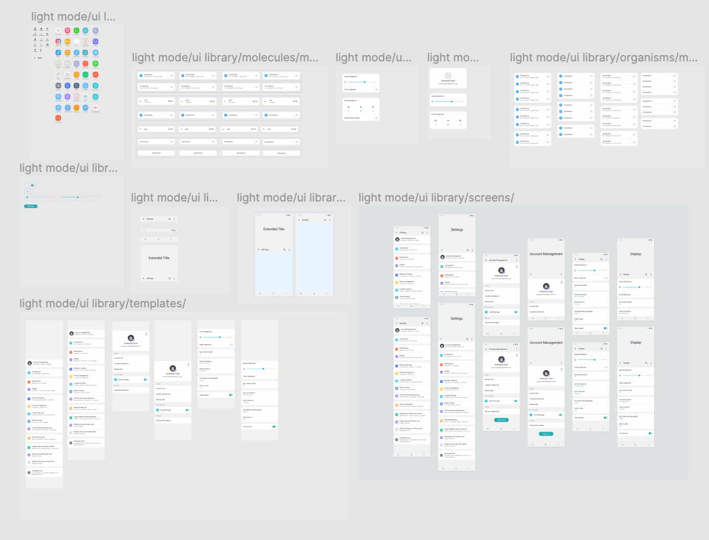

Design System One - Mobile
An ongoing project following atomic design patterns with elements inspired by Samsung's One UI Design Guidelines. I am creating a design system for long-term skill progression and component availability for future projects. The design system will be referred to as Design System One.
 Kevin Towner•Ongoing project•5 minute read
Kevin Towner•Ongoing project•5 minute read
Introduction
Why create a design system?
Design systems on-hand are productive tools when it comes to creating consistent and reusable design patterns for user interfaces. Design systems can set branding and identity standards as well as drive realistic goals.
Benefits
- • Component reusability
- • Consistent design
- • Streamline design process
- • Communication and justification
Inspiration
One UI Design Guidelines
One UI Design defines the branding and user interfaces for Samsung products.
Atomic Design
Atomic Design, developed by Brad Frost, is a methodology for organizing interconnected components to form a deliberate user interface.
Breakdown
Timeframe
- • Ongoing
- • TBA
Inspiration
- • One UI Design Guidelines
- • Atomic Design
Scope
Design System One consists of visual elements, a growing library inspired by One UI Design Guidelines (user interface), and Atomic Design (organization and hierarchy). The UI library is currently comprised of primarily Settings-based components.
First Iteration
Summary
Iteration 1 was a great starting point for building Design System One and allowed me to experiment with visual elements such as color, type, and fonts. It also laid a solid foundation for building screens for menus and/or listed content. Iteration 1 established fixed vs scrolled content and how to layer components correctly to mimick the functions of a mobile Samsung Galaxy product.
Design System One was far from perfect. There was a lack of size size and volume to the design system, and there were areas in which Design System One could be more flexible (menu-item responsiveness). Components and visual elements are not as organized as they should be which has led to inconsistencies in naming conventions, component sizing constraints, and page level redundancies.

Takeaways
- • Component library needs to be better organized
- • Visual design elements should be concise and organized
- • Settings items need to be responsive to allow multiple lines of text
- • Icons, especially app icons, should be of a higher fidelity
Improvements for iteration 2..

Naming Conventions
Naming conventions
Took visual inventory of UI components and visual elements from the first iteration and sketched new pathways for their places in Iteration Two.
Text highlighted in yellow are the improved and updated naming conventions for specific components. This process is still ongoing and hierarchy will grow as project continues
Library & Elements
• Figma Pages
Iteration 1
First iteration had 7 pages of visual design elements and user interface components. 4 of the pages were dedicated to visual elements while 3 of the pages were dedicated to user interface components. The overabundance of visual design pages was due to redunancies in visual element locations.
Iteration 2
I've reduced the amount of pages in Design System One to 3 - not including 1 page serving as a test canvas, or a "workbench". The "ui library" page houses atom, molecule, organism, and template level components. "Screens" page are where final screens are placed and prototyped. "Visual" page houses fonts, icons, colors, and images.
• Library & Visual Elements
Visual elements, Iteration 2
Iteration 2's visual design frames.UI library, Iteration 2
 Iteration 2's user interface library frames.High Fidelity Icons
Samsung Galaxy S8 icons
App icons for Iteration 1 were created by me and while i'm certainly not an iconography expert, I felt they did their job as representations of the icons one would find one the homescreen or as icons on a 'Settings' screen. Despite my best efforts, I chose not to overprioritize the visual aesthetic of Iteration 1's application icons.
I decided to download Samsung Galaxy S8 Icons from Raven. I took this route to enhance the polish of Design System One without spending an exorbitant amount of time on Iteration 2.
Second Iteration
Summary
While Iteration 2 is not finished, I've accomplished to create superior aspects of specific components to Design System One. Aspects include consistent menu-item dimensions, higher fidelity application icons, and menu-item responsiveness which would allow multiple lines of text, per each menu-item label, without compromising component properties.
Moving forward I plan to:
- • Improve menu-item responsiveness so the whole component resizes (not just component container)
- • Expand upon additional 'Settings' screens similarly to Iteration 1 - with current naming conventions in-mind